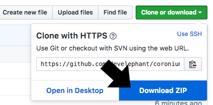
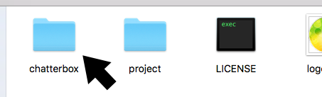

Get The Client
First point your browser to the Coronium Chatterbox Client repo.
Next, click the Clone or Download button and select Download ZIP.

Expand the coronium-chatterbox-client-master.zip file and navigate into the coronium-chatterbox-client-master directory.

Copy the chatterbox directory to the root of your Corona project. Your project tree should look something like:
CoronaProject/ main.lua chatterbox ...
Adding The Client
Once you have the chatterbox directory in your project, do the following to incorporate it.
Open your main.lua file and add the following:
local cb = require('chatterbox.client')
Note
If you are using Composer you may want to add this elsewhere. See the project directory in the client download for an example.
Connecting The Client
To connect to your Coronium Chatterbox instance, you will first need your IP address (see Installation) then add the following:
Note
The code below shows the minimum parameters needed to connect to a fresh Coronium Chatterbox instance.
cb:connect({ host = '<your-ip-address>', name = 'Sandy' })
Connection Example
local cb = require('chatterbox.client') local function onConnect() print('connected') end local function onClosed() print('disconnected') end local function onError(evt) if evt.error then print(evt.error) end end cb.events:addEventListener('OnConnect', onConnect) cb.events:addEventListener('OnClosed', onClosed) cb.events:addEventListener('OnError', onError) cb:connect({ host = '<your-ip-address>' name = 'Sandy' })
Connection Parameters
| Parameter | Description | Required |
|---|---|---|
host |
The instance address. | Y |
name |
The client display name. | Y |
port |
The instance port. | N |
key |
The authentication key. | N |
room |
The initial room to connect to. | N |
debug |
Output client-side debugging info. | N |
Tip
See Configuration in the Server Guide for more details.
Client Overview
Being a real-time client, you will use event listeners to respond to events sent from the Coronium Chatterbox instance. You can learn more about the events received in Client Events.
Rooms
Coronium Chatterbox allows you to group clients into "rooms" of your choosing. Using the joinRoom action you can switch between rooms. By default, the client is connected to the "Lobby" room. If you want to join a different room when connecting, supply the room parameter to the cs:connect method (see Connecting The Client).
When a client joins a new room, they are automatically removed from the previous room they were in. A client can only be a member of one room at any given time.
At anytime a client joins a room , a OnJoined event will be triggered in the room with the newly joined members information. The joining client also receives this message.
If a user leaves a room, the OnLeft event is triggered in the room. The leaving client will not receive this message.
Tip
Whenever a client joins or leaves a room (or changes their name), an OnClientList event will be triggered. This is a good time to store and update your client display list.
To retrieve a list of the active rooms on your Coronium Chatterbox instance use the getRooms action along with the OnRoomList event.
Client List
The client list is broadcast to the room on any OnJoined, OnLeft, or OnNameChange event. You can use this list to create a user display component, and to also gather the ID needed for the sendWhisper action. To listen for the client list use the OnClientList event.
Messages
The client can send (and receive) three different types of messages; a "room" message, a "private" message, and a "system" message.
Room Message
A room message is sent using the sendMessage action. This message type is broadcast to all members of the current room the client is in. You can receive this message type using the OnMessage event. This message type works well for chat messaging.
Important
All clients in the room receive this message type, including the client sending the message.
Private Message
You can send a message directly to any user in the room using the sendWhisper action. This message type is sent directly to the recipient. It is not broadcast into the room. To send a "whisper" you need to supply the recipient ID. You can get ahold of these ids within the OnClientList event.
System Message
To send control type messages within the room, you can use a "system" message. This message type is broadcast to the room, and can be captured outside of your "chat" layer. To receive these use the OnSystemMessage event.
System messages can be used for controlling aspects of your application state. For example, opening a webview with a passed url.
Important
All clients in the room receive this message type, including the client sending the message.
Status Events
To listen for error events from both the Coronium Chatterbox instance, as well as, the local client use the OnError event.
To listen for client timeout (if any) use the OnTimeout event.
To listen for the client disconnecting from the instance, use the OnClosed event.